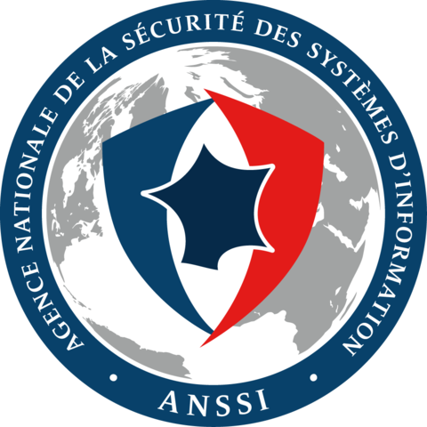
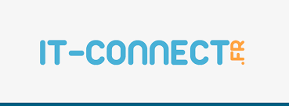
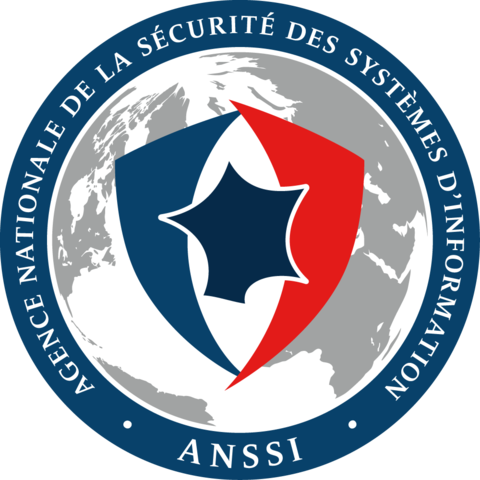
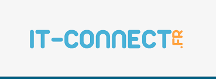
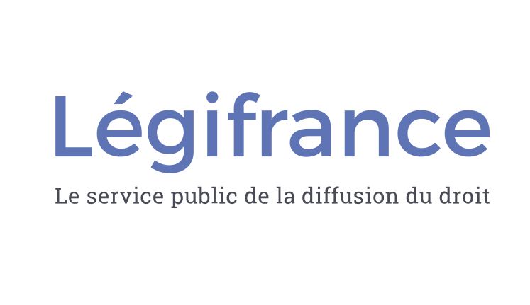
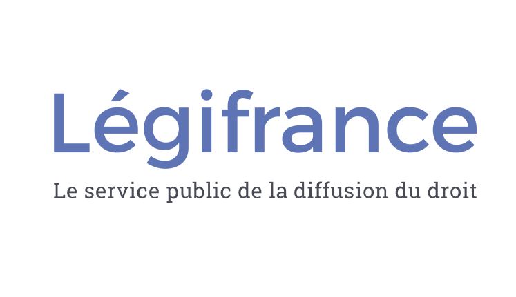
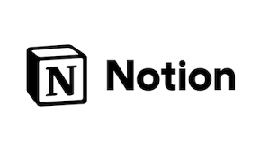
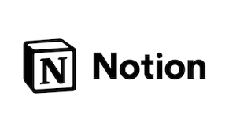

Mes Soures d'Informations Technologique :
Voici tous les liens sur lequel je m'appuis pour me documenter, mais aussi prendre connaissance de l'évolution des langages de programmation et des technologies dans le monde.
 
Qu'est ce que la veille technologique : Il s'agit d'une initiative permettant de suivre les avancées technologique dans les différents domaines liés à l'informatique, cela peut être autour du développement, mais aussi du réseau. Puisque les technologies s'adapte en permenance, connaître leurs fonctionnements pour en faire usage de manière sécuriser est une des missions très importante de la profession de développeur ou de gestionnaire de parcs informatique.
Voici tous les liens sur lequel je m'appuis pour me documenter, mais aussi prendre connaissance de l'évolution des langages de programmation et des technologies dans le monde.
 
Qu'est ce que la veille juridique : Cela est une initiative qui permet de rester informer sur les legislation appliquer par les différentes instances gouvernementale concernant l'utilisation des données des personnes présentes sur internet, connaître les lois autour du traitements qui doit être fait des données des utilisateur est vital pour le respect des personnes utilisant les outils numérique créer et gérer par ceux qui les ont fait.
Voici tous les liens sur lequel je m'appuit afin de pouvoir me conformer aux textes de loi en Frnance et au sein de l'UE
 

Mes domaines de specialisation : Durant mes deux années de BTS j'ai eu l'occasion de m'instruire à plusieurs reprises sur les notions importantes de la cybersécuriter par exemples avec le RGPD (Reglement Général Protection des Données), la CNIL (Comission Nationale de l'Informatique et des Libertés) et ces recommandations pour les entreprises quant aux données des utilisateurs gérer par les entreprises. Afin de mettre en application ses connaisances pour les consolider, plusieurs TP ont été réaliser au cour des deux années, de plus j'ai aussi put m'exercer quotidiennement grâce à des plateformes en ligne comme PIX, Open Classroom, Root Me ou encore Cisco Net Academy.
Voici l'ensemble des outils que j'ai découvert durant ma formation en BTS ainsi que durant ma veille technologique pour approfondir mes connaissances :


 

Avec l'obtention de mon BTS je désire poursuivre mes études en informatique afin de devenir un acteur à part en tiers dans ce milieu, j'envisage pour la rentrée de septembre d'intégrer la licence de Brive-la-gaillarde sur une période de 1 an en alternance afin de me former d'avantage dans un cadre professionnel et entouré de personne capable de me transmettre un savoir.